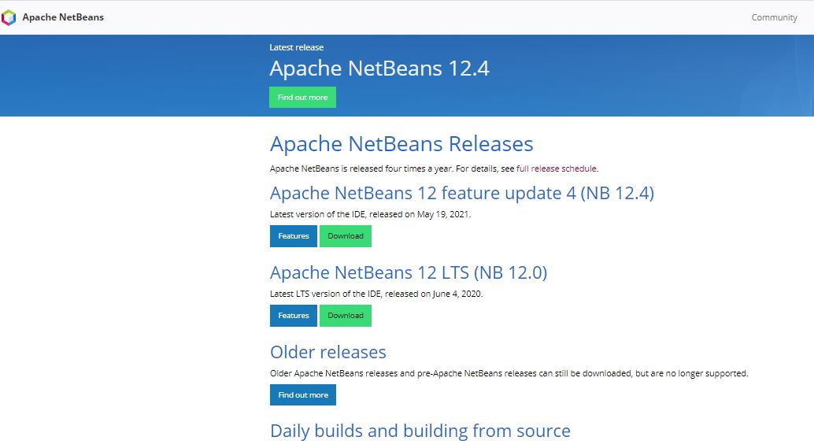
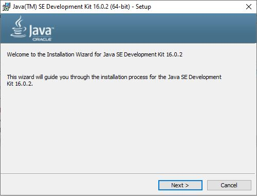
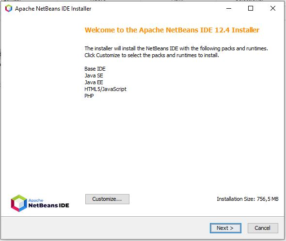
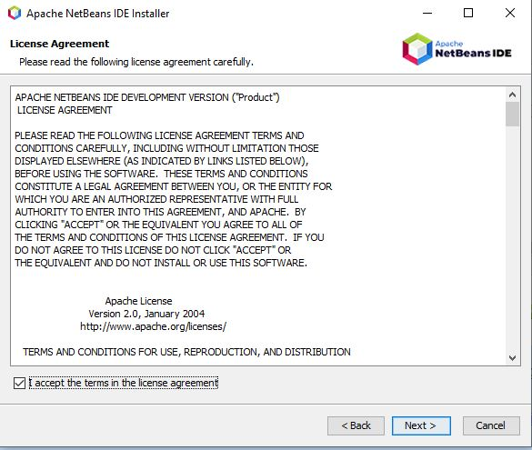
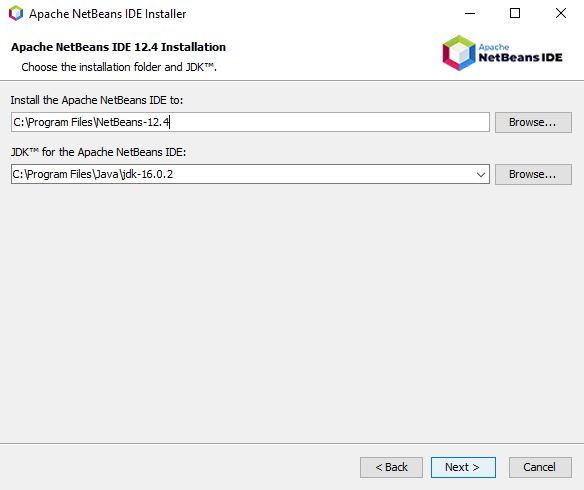
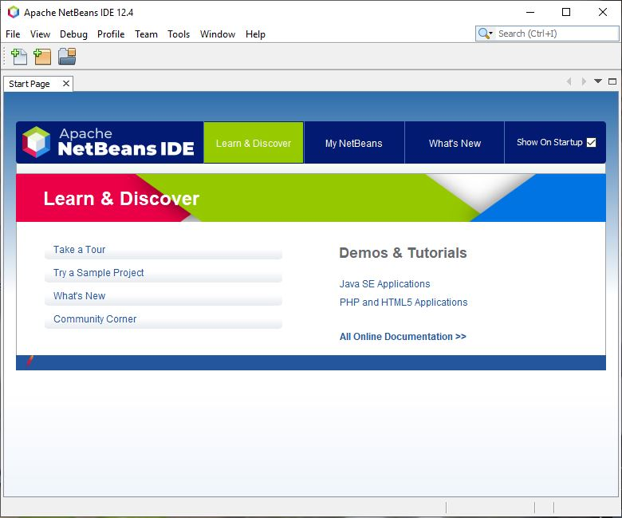
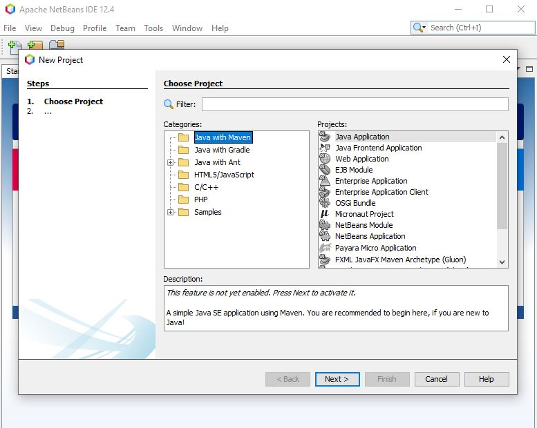
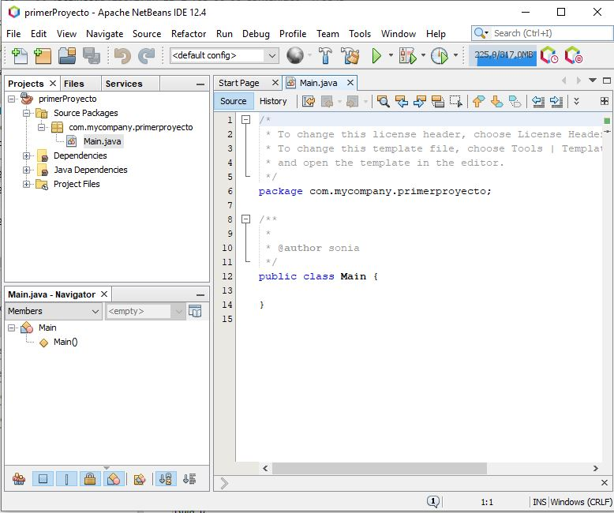
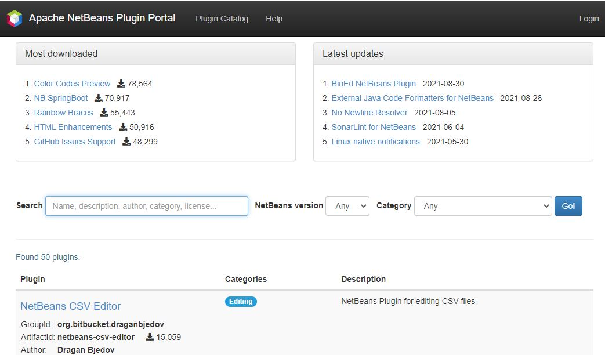

2.1.1.- Instalación de NetBeans.
Para instalar NetBeans bajo Windows, tendríamos que acceder a la página oficial de NetBeans (http://netbeans.org y Zona de descargas Apache NetBeans) y una vez dentro acceder a la zona de descargas.

Es necesario tener instalado previamente en el equipo el jdk (Java Development Kit) en una versión compatible con la versión de Netbeans a instalar (esta información la encontraremos en la página oficial de descarga del IDE).
Instalación en Microsoft Windows
Los usuarios del sistema operativo Microsoft Windows, estarán familiarizados con el proceso de instalación, puesto que se adapta al proceso estándar en el que basta con confirmar una serie de pasos. Si no tenemos las librerías de Java en nuestra computadora, podemos descargarnos la versión de NetBeans que viene ya con las librerías de Java o instalarlas previamente antes de iniciar el proceso de instalación del IDE.

Si ya tenemos instalada la JDK de Java, bastará con que nos descargamos la versión de Netbeans que mejor se adapte a nuestras necesidades e instalarla.


Una vez hemos aceptado la licencia de uso, nos preguntará donde tenemos instalado la JDK de Java. Si la tenemos instalada, nos pondrá automáticamente la ruta.

Recuerde que para poder instalar NetBeans en su computadora, es necesario que tenga instalada la Java SE Development Kit (JDK) , la cual puede descargarse desde la página oficial de Java.
Una vez tengamos instalado NetBeans ya podemos comenzar a utilizarlo.

Una vez hemos arrancado Netbeans por primera vez, podemos crear un proyecto accediendo al menú File->New Proyect y nos aparecerán los distintos tipos de proyectos que podemos crear.

Al seleccionar el proyecto de tipo Java, NetBeans nos creará la estructura básica del mismo y ya estaremos preparados para comenzar a programar nuestro proyecto.

Una vez tenemos instalado NetBeans, podemos instalarle algún plugins desde la sección "Plugins" colocada en la zona superior del menú principal de la página.

También podemos instalar los plugins desde el mismo IDE. Una vez lo tengamos instalado podemos acceder a la opción Tools->Plugins y se nos mostrará una ventana con los plugins que tenemos instalados, las posibles actualizaciones, así como la posibilidad de buscar e instalar plugins adicionales.

En informática, un complemento o plug-in es una aplicación (o programa informático) que se relaciona con otra para agregarle una función nueva y generalmente muy específica. Esta aplicación adicional es ejecutada por la aplicación principal e interactúan por medio de la interfaz de programación de aplicaciones.Complemento y plug-in se diferencian en que los plug-in son desarrollados por empresas reconocidas y tienen certificado de seguridad y los complementos pueden ser desarrollados por cualquiera.
Para saber más
Consulta el Anexo II del presente documento: Instalación de Netbeans en versiones anteriores.